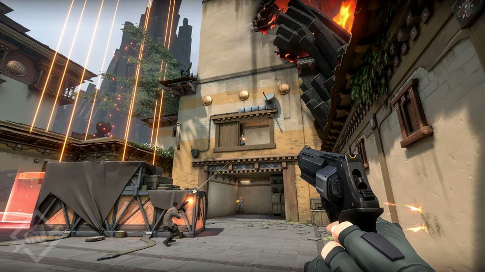
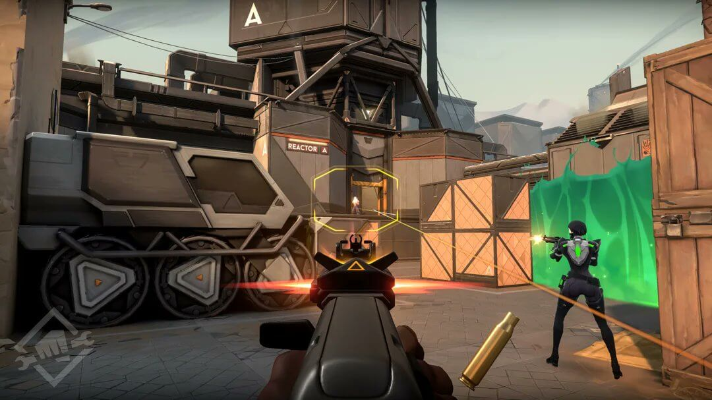
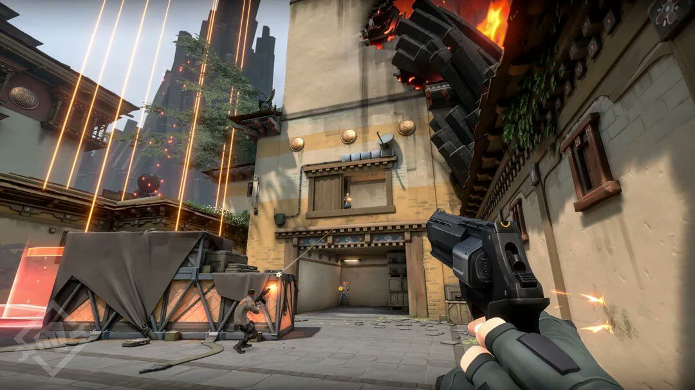
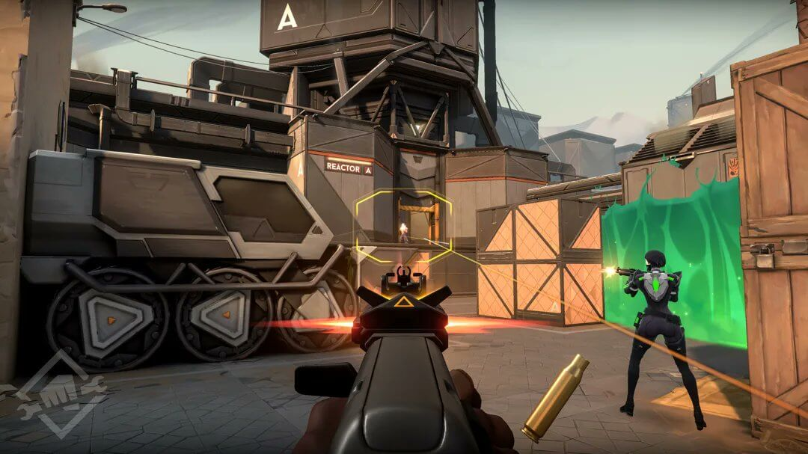

Valorant Tarihçesi
Valorant, 2020 yılında Riot Games tarafından geliştirilip piyasaya sürülen bir takım tabanlı bir FPS oyunudur. Oyun, taktiksel nişancı mekaniklerini benzersiz ajan yetenekleriyle birleştirerek hızlıca popülerlik kazandı. Valorant, çıktığı günden itibaren e-spor dünyasında önemli bir yer edinmiş ve dünya çapında büyük turnuvalar düzenlenmiştir.
Oyun İçi Resimler ve Oynanış
Valorant, iki takımın (Saldırganlar ve Savunucular) karşı karşıya geldiği bir FPS oyunudur. Saldırganların amacı, belirlenen bir bölgede Spike adı verilen bombayı kurmak ve patlatmaktır. Savunucular ise Spike'ı etkisiz hale getirmek veya saldırganları durdurmakla görevlidir. Valorant'ta oyuncuların harita seçmden rastgele haritalarda oynaması oyunu Counter-Strike'dan ayıran önemli bir özelliktir. Oyundaki ajan sistemi sayesinde oyuncuların farklı yeteneklere ve farklı rollere sahip karakterleri seçmesi mümkündür.Bu roller gözcü, düellocu, kontrol uzmanı ve öncü olmak üzere dört sınıfa ayrılır. Oyunda ajanların kendine has yetenekleri, stratejik kararlarla birleştirilerek maçın kaderini belirler.
 



Şampiyon Takımlar
| Turnuva | Şampiyon | Oyuncular | MVP |
|---|---|---|---|
| VCT Champions 2021 | Acend | starxo, BONECOLD, cNed, Kiles, zeek | Mehmet Yağız "cNed" İpek |
| VCT Champions 2022 | LOUD | aspas, Less, pancada, Sacy, Saadhak | Erick "aspas" Santos |
| VCT Champions 2023 | Evil Geniuses | Ethan, Boostio, C0M, Jawgemo, Demon1 | Max "Demon1" Mazanov |
| VCT Champions 2024 | EDward Gaming | ZmjjKK, CHICHOO, Haodong, Smoggy, Life | Zheng "ZmjjKK" Yongkang |